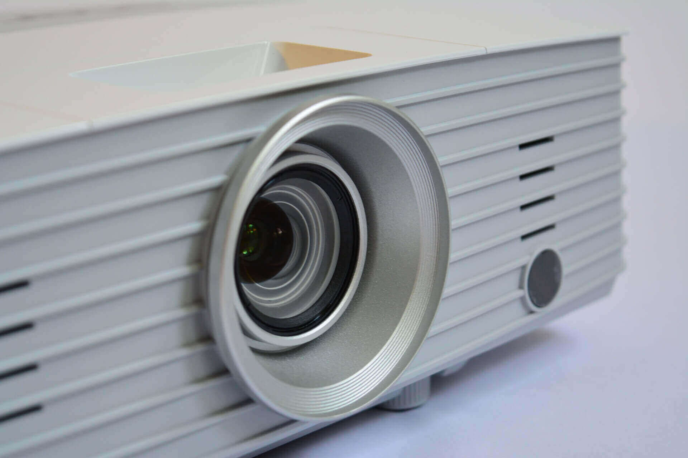

Core Offerings
Op-tec has broad systems engineering capabilities and proven track record in delivering innovative solutions that meet and often exceed expectations. We have the capability to deliver at any scale, from small additions and upgrades to existing installations, through to full turnkey projects, taking responsibility for system design and performance.
Listed are industrial automation vendors whose products we have previous experience with.

Distributed Control Systems (DCS):
- ABB (Bailey)
- Emerson (Rosemount)
- Schneider (Eurotherm)
- Siemens
Supervisory Control and Data Acquisition (SCADA) systems
and Programmable Logic Controllers (PLC):
- ABB
- GE
- Mitsubishi
- Rockwell / Allen-Bradley
- Schneider
- Siemens
We offer a broad portfolio of services to support your projects, ensuring resources are used efficiently to gain the most from the technology and expertise you have invested in.
Our engineers have a wealth of expereince and access to insights from our clients in other industries making them valuable team members during your improvement project.
Specialities:
- Obsolescence planning
- HMI design and operator effectiveness
- Alarm Management
- System design and feasibility studies
- Control loop tuning/optimisation
- Fieldbus/smart device integration and asset management
- 3rd party system/package integration

Our engineers' technical expertise and process knowledge makes us perfectly equipped to provide operational support through predictive, preventative and responsive maintenance activities.
Our services allow owners of industrial automation systems to maintain and improve the efficiency and output of their processes.
Typical service activities:
- Engineer call-out
- Routine maintenance
- Staged system upgrades
- Patching and security updates
- Configuration of asset management systems
The majority of control systems now run on standard PC hardware and MS Windows operating systems. While this provides many benefits (widely available support and spares, familiar interface for users) it does mean use of hardware and software designed for non-industrial applications.
To ensure your system can be bought back should the worst happen, we offer the following services:
- Review of current procedures
- File verification
- Secure off-site file storage
- Remote backup management
That said, we at Op-tec know only too well that many sites are still running older systems using the OEM's workstations and operating systems. In these cases an audit of current practises is recommended, to include a validation of exisiting backups.
Other Services
Site investigation and system audits
Review of installed hardware and software. Prioritised recommendations.
User requirement specifications
Preparation of User Requirement Specifications.
Feasibility studies
Project evaluation and review against cost and time constraints.
Training and coaching
System specific engineer, maintenance and operation courses.
Virtualisation
Upgrade of PCs/servers from traditional to virtualised architecture.
Control system and vendor selection
Technical evaluation of technology and proposed solutions.
Project management
Effective management of your automation projects.
Network monitoring and diagnostics
Healthchecks, fault-finding and troubleshooting.
Condition monitoring systems
Energy, vibration or smart device diagnostic information reporting.
Reverse engineering
Requirement or design specifications from existing applications.
Operational and cyber security
Review of current practises, recommendations, and implementation.
Need help with something else?
We can't list everything here, if you have a specific requirement or issue give us a call.